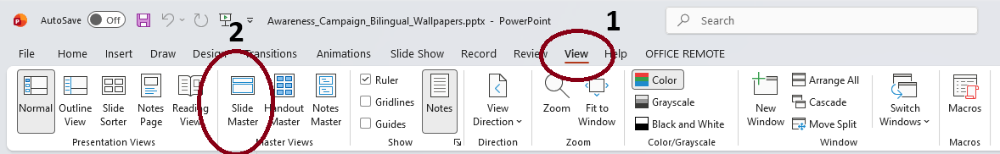
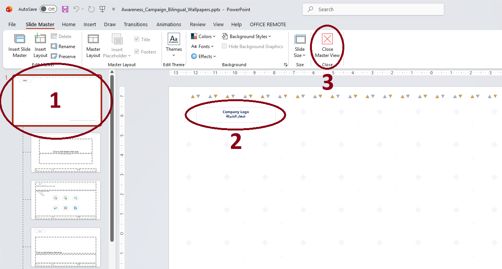
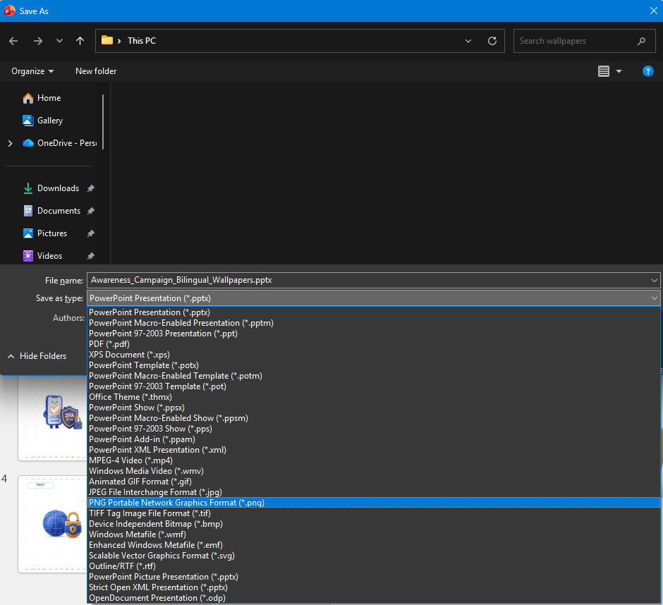
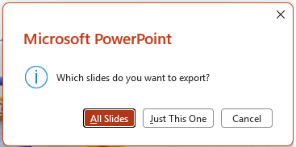

A step-by-step visual walkthrough to customize the corporate logo and footer via Slide Master, and export high-definition wallpapers for employee screens.
🌐 الانتقال إلى الدليل العربيOpen Awareness_Campaign_Bilingual_Wallpapers.pptx in Microsoft PowerPoint, then follow the two steps highlighted in the image below:

Once inside the Slide Master view, follow the exact numbering indicated on the screenshot:

To extract the presentation slides as standalone high-resolution images (Full HD 1080p):

